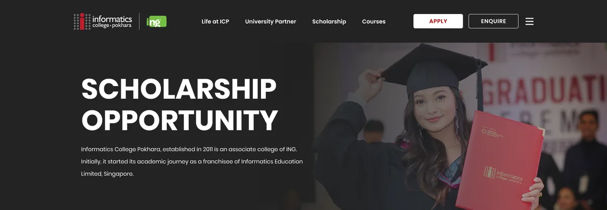

The family
Three colleges, three accents.



| Herald | IIC | ICP | |
|---|---|---|---|
| Headings | Heavy capitals throughout | Light display face | Light display face, heavy capitals only in the headers |
| Ornament | A new colour per home section | Coloured room tiles | Circles in red, coral, slate and yellow |
| Page ending | Two versions | Graduates on olive | Graduates under a red wash, "Are you ready to join?" |
| Nav | Five links | Logo centred, links in a menu | Four links, Apply, Enquire and a menu |